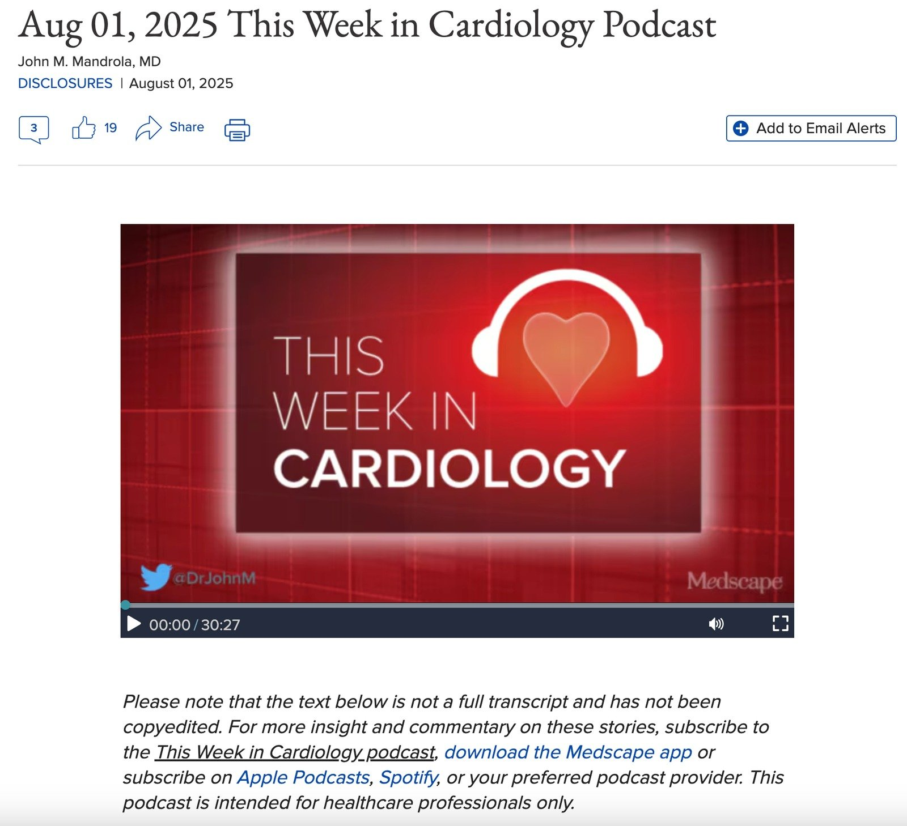

03/08/2025 — Độ chính xác của quyết định kích hoạt phòng thông tim với các điện tâm đồ tương đương STEMI và giả STEMI: bác sĩ so với AI (PMcardio, Queen of Hearts), và bình luận của John Mandrola trên "This Week in Cardiology Podcast"
Bản dịch tiếng Việt của bài "Accuracy of cath lab activation decisions for STEMI-equivalent and mimic ECGs: Physicians vs. AI (PMcardio, queen of hearts), and comment by John Mandrola on “This Week in Cardiology Podcast”" – Dr. Smith’s ECG Blog. Giữ nguyên toàn bộ 0 hình ảnh của bản gốc.


Đây là đường link tới nghiên cứu của Shroyer, Mehta, Thukral, Smiley, Mercaldo, Meyers và Smith
Đây là đường link tới toàn bộ các điện tâm đồ.
This Week in Cardiology Podcast – August 01, 2025 (Podcast Tim mạch trong tuần – ngày 01 tháng Tám năm 2025) — bản ghi lời ở đây
Tác giả: John M. Mandrola, MD
Công bố xung đột lợi ích, ngày 01 tháng Tám năm 2025
AI so với bác sĩ đọc điện tâm đồ để kích hoạt phòng thông tim
Tạp chí American Journal of Emergency Medicine tuần này có một nghiên cứu hay, so sánh độ chính xác của việc kích hoạt phòng thông tim (cath lab activation, CLA) với các điện tâm đồ tương đương nhồi máu cơ tim ST chênh lên (STEMI) và điện tâm đồ giả STEMI.
Tôi thực sự thích nghiên cứu này. Và đây là một vấn đề quan trọng, vì nhận diện STEMI trong những phút đầu tiên khi người bệnh đến viện là then chốt.
Mục tiêu là đo độ chính xác của bác sĩ so với thuật toán trí tuệ nhân tạo (AI) dựa trên học máy của Queen of Hearts, một mô hình mạng nơ-ron sâu. Bạn có thể dùng nó trên điện thoại. Nó xác định có hay không có nhồi máu cơ tim do tắc (OMI).
Mô hình AI điện tâm đồ STEMI của PMcardio đã được FDA cấp danh hiệu Thiết bị Đột phá (Breakthrough Device Designation) vào tháng Ba năm 2025, nhưng vẫn chưa được FDA cấp phép lưu hành tại Mỹ.
___________
Ứng dụng PMcardio for Individuals 3.0 mới nay đã có mô hình Queen of Hearts mới nhất và khả năng giải thích của AI (bản đồ nhiệt màu xanh lam)! Tải ngay cho iOS hoặc Android. https://www.powerfulmedical.com/pmcardio-individuals/ (BS. Smith và BS. Meyers đã huấn luyện mô hình AI này và là cổ đông của Powerful Medical.
___________
Người Mỹ cần chờ FDA phê duyệt, nhưng có cơ hội dùng sớm bot AI PM Cardio thông qua đăng ký bản thử nghiệm beta. Ứng dụng có trên kho ứng dụng Android và Apple ở Liên minh châu Âu và Vương quốc Anh.
Hơn 2500 bệnh viện đang trong danh sách chờ, và hiện ứng dụng đang được thử nghiệm trong các chương trình thí điểm tại hơn 60 trung tâm trên toàn cầu.
Nghiên cứu này được thực hiện ở San Antonio, trong một hệ thống bệnh viện gồm hai bệnh viện cộng đồng và bốn khoa cấp cứu (ED) độc lập; các tác giả đã chọn 18 điện tâm đồ khó. Tôi biết điều này vì chúng có trong Phụ lục. Và tôi đã phải thực sự nghiền ngẫm chúng. Trong số đó có bốn dạng tương đương STEMI cần điều trị tái tưới máu ngay lập tức. Họ thêm một điện tâm đồ có sóng T Wellens và STEMI aVR. Họ cũng đưa vào STEMI thoáng qua và OMI kèm blốc nhánh phải (RBBB) với blốc phân nhánh trái trước (LAFB). Tám điện tâm đồ đại diện cho các trường hợp giả STEMI được đưa vào để kiểm tra kích hoạt phòng thông tim dương tính giả.
Một lần nữa, phản ứng ban đầu của tôi với nghiên cứu là đây có thể là những điện tâm đồ được chọn lọc kỹ, có lẽ để làm nổi bật khác biệt giữa bác sĩ và AI. Có thể đúng là như vậy, nhưng nhìn vào chúng, đây là những điện tâm đồ thật, và chúng là loại điện tâm đồ khiến não căng thẳng khi đọc.
Một tiêu chí loại trừ quan trọng là các điện tâm đồ gặp trong viêm màng ngoài tim, bệnh cơ tim Takotsubo và đau thắt ngực Prinzmetal, vì hiện có rất ít tiêu chuẩn đã công bố giúp phân biệt chúng với OMI.
Tóm lại, có 12 dạng điện tâm đồ cần chụp mạch vành ngay lập tức và 6 điện tâm đồ là giả STEMI, không cần kích hoạt phòng thông tim.
Các điện tâm đồ được đưa cho 53 bác sĩ cấp cứu, 42 bác sĩ tim mạch và thuật toán AI. Tiêu chuẩn tham chiếu là chụp mạch vành. Có OMI hay không? Kết cục là một biến nhị phân: kích hoạt phòng thông tim hay không.
Kết quả
Độ chính xác khi đọc tương tự nhau giữa bác sĩ cấp cứu và bác sĩ tim mạch: cả hai đều là 66%.
Nhưng cả hai đều thấp hơn rất nhiều so với mô hình AI, vốn quyết định đúng việc kích hoạt phòng thông tim (CLA) ở 89% trường hợp.
Bác sĩ phân loại sai thường gặp nhất ở hình ảnh de Winter, STEMI thoáng qua, OMI có sóng T tối cấp và các điện tâm đồ blốc nhánh
Thuật toán AI Queen of Hearts chỉ phân loại sai hai dạng điện tâm đồ: OMI kèm blốc nhánh trái (LBBB có Sgarbossa (+)*) và phình thất trái. Chính các dạng điện tâm đồ này cũng gây khó cho bác sĩ, với chỉ lần lượt 14 % và 58 % bác sĩ đọc đúng.
Cuối cùng, bác sĩ cấp cứu bỏ sót 41 % số OMI thật (195/477) và chẩn đoán quá mức 32 % số trường hợp không phải OMI (133/415), trong khi AI Queen of Hearts chỉ bỏ sót 11 % và chẩn đoán quá mức 11 %.
Tóm tắt các phát hiện chính
Độ chính xác chung của bác sĩ thấp (66 %), phù hợp với các nghiên cứu trước báo cáo độ chính xác 70% dù dùng ít điện tâm đồ mơ hồ hơn.
Độ chính xác của bác sĩ cấp cứu và bác sĩ tim mạch gần như giống hệt nhau (lần lượt 65.6% và 65.5%; P = .969).
Các dạng điện tâm đồ bị đọc sai nhiều nhất gồm LBBB (±OMI), STEMI thoáng qua và sóng T tối cấp, cũng như sóng T de Winter
Thuật toán AI Queen of Hearts chính xác hơn bác sĩ (89% so với 66%, P < .001), phân loại đúng tất cả điện tâm đồ trừ phình thất trái (LV) và LBBB kèm OMI, cho thấy tiềm năng cải thiện chăm sóc và sử dụng nguồn lực.
Bình luận
Tôi thấy đây là một nghiên cứu đáng chú ý. AI rõ ràng tốt hơn. Các điện tâm đồ thì khó, nhưng chúng là thật, và tôi đã thấy chúng được xem xét trong các buổi bình duyệt chuyên môn như những ca bỏ sót STEMI.
Không ai bỏ sót ST chênh lên hình bia mộ 3-4 mm. Chính các trường hợp giả STEMI tinh tế mới khó. Nếu bạn là một bệnh nhân bị tắc động mạch liên thất trước (LAD) nhưng điện tâm đồ không rõ ràng, bạn chỉ có thể hy vọng vào a) may mắn, hoặc b) một người đọc điện tâm đồ bậc thầy, hoặc c) một thuật toán AI thật sự tốt.
Về mặt khoa học, tôi tự hỏi liệu giải pháp tốt nhất có phải là bác sĩ giỏi đã khám bệnh nhân và có xác suất tiền nghiệm kiểu Bayes dựa trên bệnh sử và dáng vẻ chung (nhồi máu cơ tim thường trông như nhồi máu cơ tim ngay từ lúc bước vào cửa) cộng với AI, so với chỉ AI đơn thuần hay không. Đó là một phép so sánh giả định, vì tôi không nghĩ nghiên cứu như vậy sẽ bao giờ được tiến hành, bởi tôi khó hình dung một phòng cấp cứu không có bác sĩ. (Nhưng trước khi có điện thoại thông minh, tôi cũng không thể hình dung y khoa với điện thoại thông minh.)
Dù vậy, tôi không hiểu tại sao FDA lại không phê duyệt một thiết bị như vậy để sử dụng. Nó có vẻ là một công cụ hỗ trợ quan trọng để đi đến chẩn đoán đúng. Tôi thấy nó tương tự siêu âm tại giường khi đặt đường truyền tĩnh mạch trung tâm. Đúng vậy. Bạn có thể vào được tĩnh mạch trung tâm mà không cần siêu âm, nhưng tại sao lại làm thế?
Với điện tâm đồ và việc kích hoạt phòng thông tim (CLA) cũng vậy, đúng là bạn có thể làm mà không cần AI, nhưng tại sao lại làm thế? Các trường hợp tương đương STEMI và giả STEMI không hiếm, và Queen of Hearts trông khá tốt.
Công nghệ thật tuyệt vời.
=====================================
BÌNH LUẬN CỦA TÔI, bởi KEN GRAUER, MD (3/8/2025):
Đây là một bài quan trọng trên Dr. Smith’s ECG Blog — vì bài báo của Shroyer và cs. đóng góp thêm một nghiên cứu nữa ủng hộ ảnh hưởng tích cực mà AI mang lại cho quá trình ra quyết định CLA (kích hoạt phòng thông tim), so với việc đọc điện tâm đồ chỉ bởi các bác sĩ lâm sàng giàu kinh nghiệm (tức là 53 bác sĩ cấp cứu và 42 bác sĩ tim mạch đã tham gia nghiên cứu của Shroyer).
- Dù đã nói như trên — tôi tin rằng một Câu hỏi MẤU CHỐT còn lại là: “Sử dụng dữ liệu mà nghiên cứu này cung cấp như thế nào là TỐT NHẤT?”.
- Ẩn trong Câu hỏi MẤU CHỐT này là câu hỏi phụ: “Tận dụng như thế nào là TỐT NHẤT chuyên môn mà ứng dụng AI này rõ ràng mang lại?”.
Việc ứng dụng PMcardio for Individuals 3.0 ( = mô hình Queen-Of-Hearts mới nhất, có khả năng giải thích của AI) rõ ràng có mang lại chuyên môn cho việc ra quyết định CLA — hẳn đã hiển nhiên từ cách mà ứng dụng AI QOH được phát triển (cụ thể là qua dữ liệu đầu vào do BS. Smith và BS. Meyers cung cấp — từ một nguồn dữ liệu không ngừng mở rộng dựa trên hàng nghìn điện tâm đồ thực tế).
- Giá trị của nguồn dữ liệu này được kiểm chứng tỉ mỉ bằng hồ sơ thông tim, nhằm trả lời câu hỏi lâm sàng MẤU CHỐT: “Có nên kích hoạt phòng thông tim cho bệnh nhân này dựa trên bệnh sử này và điện tâm đồ này không?”.
- Minh chứng cho năng lực của BS. Smith và BS. Meyers trong việc thiết kế quá trình huấn luyện ứng dụng AI QOH — chính là thư viện đáng kinh ngạc gồm gần 2,000 ca lâm sàng được tích lũy trong 17 năm qua trên Dr. Smith’s ECG Blog.
- Xin nhấn mạnh: Ứng dụng AI QOH tiếp tục ngày càng tốt hơn, vì cơ sở dữ liệu của nó không ngừng mở rộng, cùng với những cải tiến trong cách AI diễn giải được tích hợp vào mỗi phiên bản mới của ứng dụng khi ra mắt.
18 điện tâm đồ trong nghiên cứu của Shroyer:
Theo bài bình luận 6 phút của BS. John Mandrola (bắt đầu từ phút 5:45 trong bản trình bày âm thanh) đã dẫn ở trên — 18 điện tâm đồ làm nền tảng cho nghiên cứu của Shroyer “thì khó” — và — “tôi đã phải thực sự nghiền ngẫm chúng” — nhưng — “đây là những điện tâm đồ thật, và chúng là loại điện tâm đồ khiến não căng thẳng khi đọc”.
ĐỀ XUẤT CỦA TÔI: Tôi khuyến khích tất cả độc giả của ECG Blog này tự xem lại 18 điện tâm đồ này — và sau đó so sánh câu trả lời của bạn với câu trả lời của QOH. Tôi đảm bảo đây sẽ là cách dùng thời gian rất bổ ích — khi bạn so sánh câu trả lời của mình với câu trả lời của QOH, rồi rút ra hiểu biết từ kết quả thông tim và từ hướng xử trí lâm sàng của từng ca.
SUY NGHĨ CỦA TÔI:
Đã dạy đọc điện tâm đồ suốt 40+ năm cho sinh viên y khoa, bác sĩ nội trú, nhân viên cận y tế, và đặc biệt cho bác sĩ thuộc mọi chuyên khoa ở cấp địa phương, toàn quốc và nay là quốc tế — tôi vẫn là một người lạc quan.
- Tôi tin rằng các bác sĩ lâm sàng, dù được đào tạo y khoa theo hướng nào, đều có thể được dạy để cải thiện khả năng nhận ra các hình ảnh điện tâm đồ cấp — và nhờ đó cải thiện khả năng nhận ra một cách kịp thời hơn nhu cầu kích hoạt (hoặc không kích hoạt) phòng thông tim.
CẢNH BÁO #1: 18 điện tâm đồ tạo nên nghiên cứu này chỉ là một cái nhìn thoáng qua về những gì chúng tôi thường xuyên thấy từ các ca lâm sàng mà bác sĩ ở mọi trình độ kinh nghiệm trên khắp thế giới gửi đến.
- Với những người trong chúng tôi thường xuyên soi xét đủ mọi loại bản ghi điện tâm đồ cấp cứu — nhiều bản ghi trong số 18 bản ghi của nghiên cứu Shroyer là dễ đọc, vậy mà có tới 1/3 trong số 95 bác sĩ cấp cứu và bác sĩ tim mạch xem các bản ghi này đã phân loại sai.
- Dù vậy — tôi rất ngờ rằng “độ chính xác” của người tham gia nghiên cứu còn thấp hơn nữa nếu tỷ lệ bản ghi OMI+/STEMI- tinh tế cao hơn.
CẢNH BÁO #2: Dữ liệu y văn hiện nay của chúng ta quá thường xuyên có sai sót. Hệ quả là — lời tiên tri tự ứng nghiệm ủng hộ mô hình STEMI kém hơn về mặt lâm sàng và lỗi thời vẫn được duy trì (Bằng chứng ủng hộ tính ưu việt của mô hình OMI có thể dễ dàng truy cập từ Menu Research & Resources (Nghiên cứu & Tài nguyên) ở đầu mỗi trang của Dr. Smith’s ECG Blog — trong mục OMI Literature Timeline (Dòng thời gian y văn về OMI) và OMI Facts & References).
- Một ví dụ về lời tiên tri tự ứng nghiệm này — Chúng tôi đã đăng nhiều ca trên Dr. Smith’s ECG Blog về OMI cấp không đủ tiêu chuẩn STEMI vì không đạt mức ST chênh lên dựa trên milimét theo yêu cầu trên điện tâm đồ ban đầu hay các điện tâm đồ ghi lại. Cuối cùng, một số bản ghi OMI+ này đã đủ tiêu chuẩn “STEMI” (tức là cuối cùng ST cũng chênh lên đủ mức — nhưng là nhiều giờ, thậm chí 1-2 ngày sau thời điểm điện tâm đồ ban đầu đã OMI+).
- Nếu bác sĩ can thiệp vốn đã từ chối thông tim cho một bệnh nhân có điện tâm đồ OMI+/STEMI-, nay lại thông tim “ngay lập tức” cho bệnh nhân này khi một trong các điện tâm đồ ghi lại cuối cùng đạt tiêu chuẩn STEMI — Điều gì được ghi vào cơ sở dữ liệu?
- Điều được ghi vào cơ sở dữ liệu là: “bác sĩ can thiệp đã kích hoạt phòng thông tim ‘ngay lập tức’ (tức là trong vòng vài phút ngay khi đạt tiêu chuẩn STEMI) — mặc dù không nhận ra rằng PCI thực hiện 3-10 giờ (hoặc hơn) sau một điện tâm đồ ban đầu OMI+ khó có thể mang lại lợi ích đáng kể. Nhưng mô hình STEMI sai lầm vẫn “đóng bê tông” trong tư duy của những người gắn chặt với khái niệm lỗi thời này.
CẢNH BÁO #3: Dù nghiên cứu này của Shroyer và cs. tốt đến đâu — thiết kế được một “nghiên cứu hoàn hảo” vẫn là mục tiêu khó đạt.
- Đôi khi “câu trả lời đúng” cho một bệnh nhân cụ thể với một điện tâm đồ cụ thể có thể là có chỉ định thông tim sớm vì có đủ nghi ngờ về một tình trạng tắc mạch vành đang diễn ra để cần một câu trả lời dứt khoát.
- Đôi khi tốt hơn là loại trừ OMI cấp, thay vì “ngồi chờ” một ca hàng giờ liền trong do dự.
- Và đôi khi … “Phải có mặt ở đó mới biết!”. Những tình huống trong Cảnh báo #3 này rất khó “kiểm tra”.
CÁCH TIẾP CẬN CỦA TÔI VỚI VẤN ĐỀ:
Tôi tin rằng cách TỐT NHẤT để tối ưu hóa chuyên môn của ứng dụng AI QOH — là kết hợp nó với việc ra quyết định của bác sĩ lâm sàng.
- Dù ứng dụng AI QOH tốt đến đâu — nó không hoàn hảo. Nhờ nỗ lực liên tục của BS. Smith và BS. Meyers cùng Powerful Medical — những sai sót/bỏ sót của các phiên bản QOH trước đây đã được khắc phục. Nhưng đây vẫn là một quá trình liên tục. Nhận định của bác sĩ lâm sàng vẫn quan trọng.
- Bác sĩ lâm sàng học tốt nhất NẾU họ buộc bản thân đọc từng điện tâm đồ gặp phải trước khi xem kết quả đọc của QOH. Có thể học được rất nhiều từ khả năng giải thích của AI, vốn đưa ra dự đoán xác suất theo phần trăm cho từng chuyển đạo trong 12 chuyển đạo có ảnh hưởng đến quyết định của AI.
- Nếu bạn, với tư cách bác sĩ lâm sàng, thấy kết quả đọc của mình phù hợp với QOH — thì 1 + 1 =5, và mức độ tự tin của bạn vào kết quả đọc điện tâm đồ của mình tăng lên (điều này làm tăng khả năng đưa ra quyết định đúng cho bệnh nhân!).
- Ngược lại, nếu có khác biệt giữa kết quả đọc của bác sĩ lâm sàng và của AI — Hãy quay lại “bàn vẽ” để cố tìm hiểu tại sao — đồng thời luôn nhớ rằng QOH chính xác tới 90% trong đánh giá khả năng OMI cấp trên điện tâm đồ (trong khi phần lớn bác sĩ lâm sàng còn kém xa). Trong những trường hợp như vậy — khả năng giải thích của AI mang lại cơ hội tối ưu để học xem tại sao QOH trả lời khác bạn.
- Hãy cố gắng hết sức theo dõi diễn tiến tất cả các ca của bạn trong khả năng có thể! Đây là cách duy nhất để học một cách tối ưu. Có thể đôi khi cả bạn và QOH đều “sai”. Theo dõi diễn tiến những ca như vậy (lý tưởng là tìm hiểu không chỉ kết quả thông tim — mà cả chuyện gì đã xảy ra với bệnh nhân) là cách mà tất cả chúng ta học hỏi.
- Hãy tạo một kênh để nhận ý kiến chuyên gia khi cần (tức là từ những bác sĩ lâm sàng thật sự giỏi nhận ra các bản ghi OMI+/STEMI-). Nếu không thể hỏi ý kiến chuyên gia vào lúc đang khám bệnh nhân — thì hãy hỏi sau đó, bằng cách chụp màn hình các bản ghi liên tiếp quan trọng kèm ghi chú các kết quả xét nghiệm then chốt, và lý tưởng là có đối chiếu với mức độ triệu chứng tại thời điểm ghi từng điện tâm đồ (tôi khuyên nên ghi ngay trên từng điện tâm đồ thực tế, theo thang điểm từ 1 đến 10, mức độ đau ngực của bệnh nhân tại thời điểm ghi điện tâm đồ đó). Năm 2025 rồi — không còn lý do bào chữa nào. Internet giúp mọi người đều có thể tiếp cận một chuyên gia đọc điện tâm đồ.
- Cuối cùng — Hãy tiếp tục theo dõi Dr. Smith’s ECG Blog để có nguồn ca lâm sàng mới và đầy thử thách không bao giờ cạn.